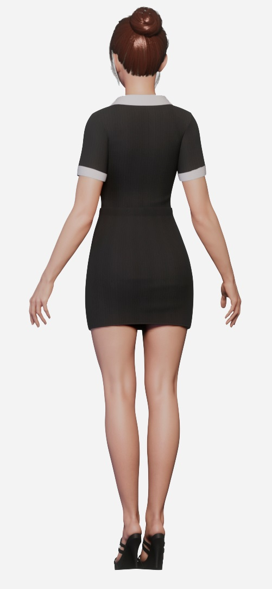
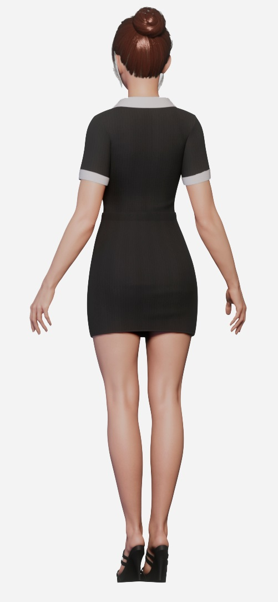

Портфолио


Перекрытие шрамов и неудачных тату
Перекрытия — это всегда непросто:- ограниченная цветовая палитра, так как светлые и теплые оттенки не перекрывают темные
- эскиз должен скрыть старую татуировку полностью, поэтому он обычно больше по размеру
- темные части старой татуировки останутся там, где они были, и нужно под них подстраиваться
Выпуклость никуда не пропадет и ее нужно прятать рисунком, поэтому если их закрасить просто так, они станут заметнее на фоне ровной кожи
Любые шрамы перекрывать нужно очень осторожно


Если у тебя есть то, что хочешь перекрыть — то тебе ко мне
Напиши мне и мы обсудим об этом — консультация бесплатно
Записаться на сеансУслуги
Нажми на место, где хотите набить тату, чтобы узнать цену
Эта процедура — не из приятных, и она доставляет определенные сложности вне зависимости от пола и возраста человека. Существует так называемая карта боли, которая иллюстрирует самые болезненные и относительно неприятные области для нанесения рисунка.

Наименее болезненно
Очень больно


 



Восприимчивость различных участков неодинакова. На болезненность влияют разные факторы: плотность кожи, количество нервных окончаний в определенной области, удаленность от кости (если кость близко к коже, будет больно при нанесении тату).
Важно! Если вам становится нестерпимо больно, не надо дергаться и извиваться под рукой мастера. Лучше всего прервать сеанс и продолжить в следующий раз.
Если знаешь размер и место тату, то смело записывайся
Записаться на сеансКонтакты